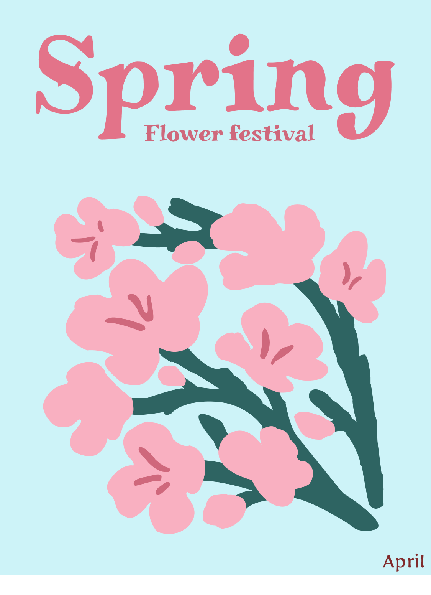

01
Spring Flower Festival
봄이 지닌 따뜻하고 화사한 분위기를 시각적으로 표현한 포스터입니다.
봄을 대표하는 벚꽃을 메인 오브제로 배치하여 계절의 생동감과 설렘을 전달하고자 했으며, 전체적인 색상은 벚꽃을 연상시키는 핑크와 맑은 하늘을 떠올리게 하는 하늘색을 사용해 포근하고 밝은 봄의 이미지를 강조했습니다.
타이포그래피는 부드러운 곡선이 돋보이는 세리프 서체를 사용하여 자연스럽고 우아한 분위기를 연출했습니다. 손글씨 같은 따뜻한 인상을 주면서도 축제의 낭만적인 감성을 함께 담아 봄이라는 계절의 특징을 더욱 효과적으로 표현했습니다.
또한 벚꽃 가지가 화면을 대각선으로 감싸는 구성을 통해 꽃이 바람에 흩날리는 듯한 흐름과 자연스러운 시선을 유도했으며, 여백을 충분히 활용해 봄 특유의 여유롭고 편안한 분위기를 느낄 수 있도록 디자인했습니다.